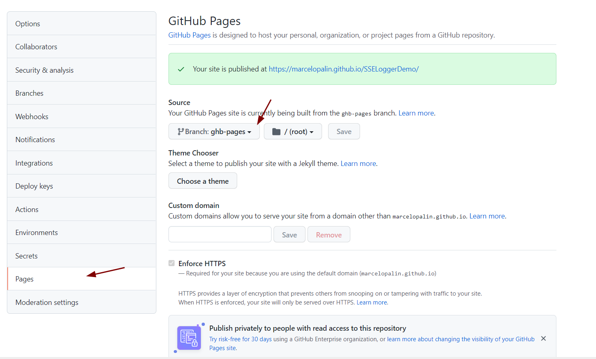

Veja como fazer para criar sua página do Projeto Github
Getting Started with Github Pages
Aprenda a criar sua página do projeto
Para encurtar a história, basta você criar uma branch separada caso não queira deixar misturados o html da página com o projeto. Então clicar em Settings do projeto.

One of three columns
One of three columns